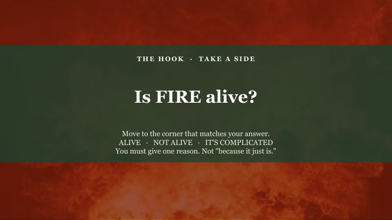

Enlarge screenshot.Source: Year 7 Science
Start with a question worth arguing about
“Is fire alive?” invites a claim and a reason before students examine the characteristics of living things. Documentary-style imagery gives the question a context.
Teacher control. I choose the question and follow it with explicit teaching. AI helps produce the resource; I check it before use.
From my own classes · screenshots only